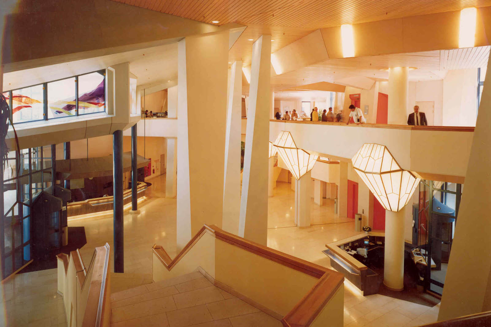

SandCastle Web


Located in the centre of Amsterdam-Zuidoost is a massive and historical building that locals call "The Sandcastle." Constructed in 1987, the former headquarters of ING has become a renowned icon, lauded for its distinct style and architectural significance.
Built in a time when organic architecture was becoming more and more popular, The Sandcastle is a remarkable illustration of this experimental approach. The structure, which was created by well-known architects Alberts and Van Huut, is distinguished by its sloping walls that look like sand, its extensive use of water elements, its lush gardens, and its natural materials like wood.
The Sandcastle has received a great deal of recognition and praise throughout the years. Due to its timeless appeal and creative architecture, it was acclaimed as the most admired contemporary building in the Netherlands in the 1990s. When it came to the nation's most attractive building, the Gasunie headquarters in Groningen took first place in the 2007 voting. Moreover, The Sandcastle's cultural and historical value was highlighted in 2017 when it was designated as the first municipal monument in Amsterdam Southeast.

As Amsterdam-Zuidoost's landscape continues to change, The Sandcastle is now starting a new phase in its illustrious history. Plans are in place to convert the building from its original use as an office space into a dynamic mixed-use development through an innovative and cooperative endeavour. The ambitious project entails repurposing The Sandcastle to serve several purposes, such as housing, an international school, and restaurants.
The Sandcastle's transformation represents the adaptability of building and the long-lasting impact of innovative design. This landmark building continues to be a remarkable example of organic architecture's ability to fit in with its surroundings while providing a timeless expression of creativity and creativity, even as it changes to meet the requirements of a changing community.